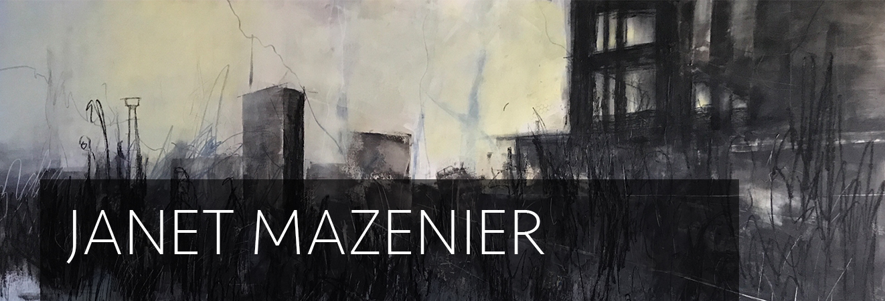

About
Janet Mazenier is a New Zealand artist best known for her paintings of architectural spaces. In her work, Janet identifies and investigates the ongoing relationship between humans and the architecture of their surroundings, encouraging a reflective approach to wonder why some spaces are left vacant, and others populated.
Having lived in Wellington for most of her working life in business before taking up painting fulltime, Janet now resides in Devonport, Auckland. She recently graduated with a Bachelors Degree in Fine Art (painting) from Whitecliffe School of Art and Design.
She has had solo exhibitions and has participated in many group exhibitions. Janet has been a finalist in competitions, winning the award of “new artist” in Auckland’s East Art Awards in 2008.
Janet's work is held in private collections in England, Australia and New Zealand. Her work is represented by the Flagstaff Gallery in Devonport, Auckland, New Zealand.